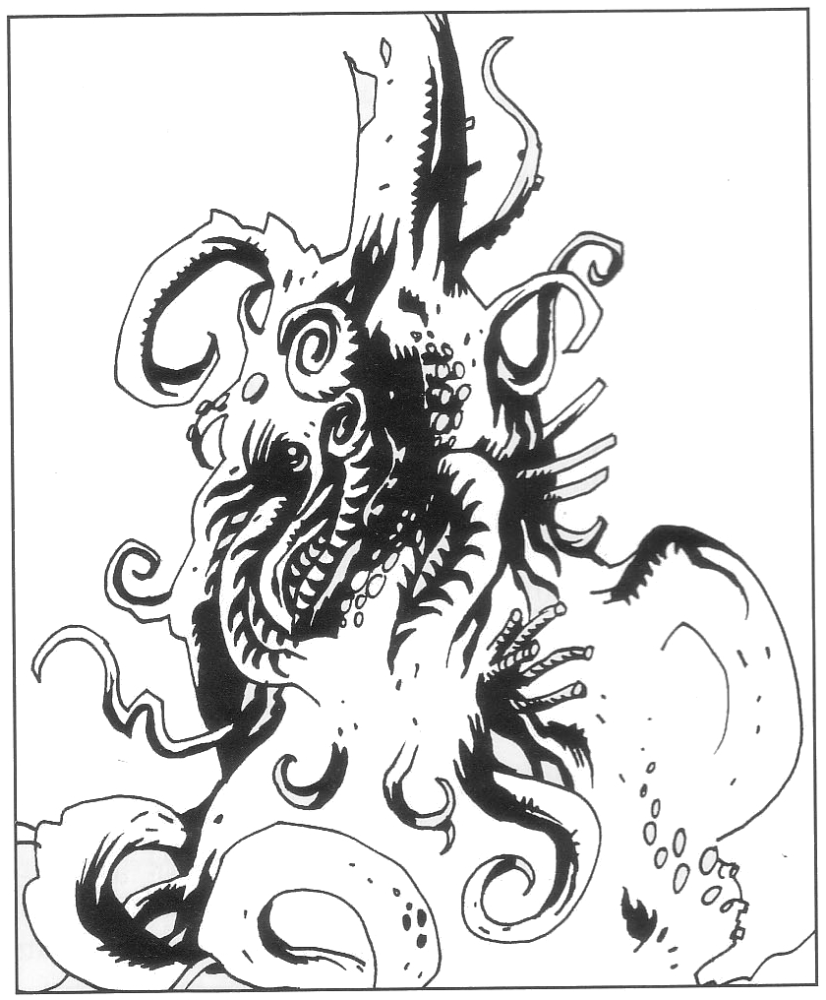
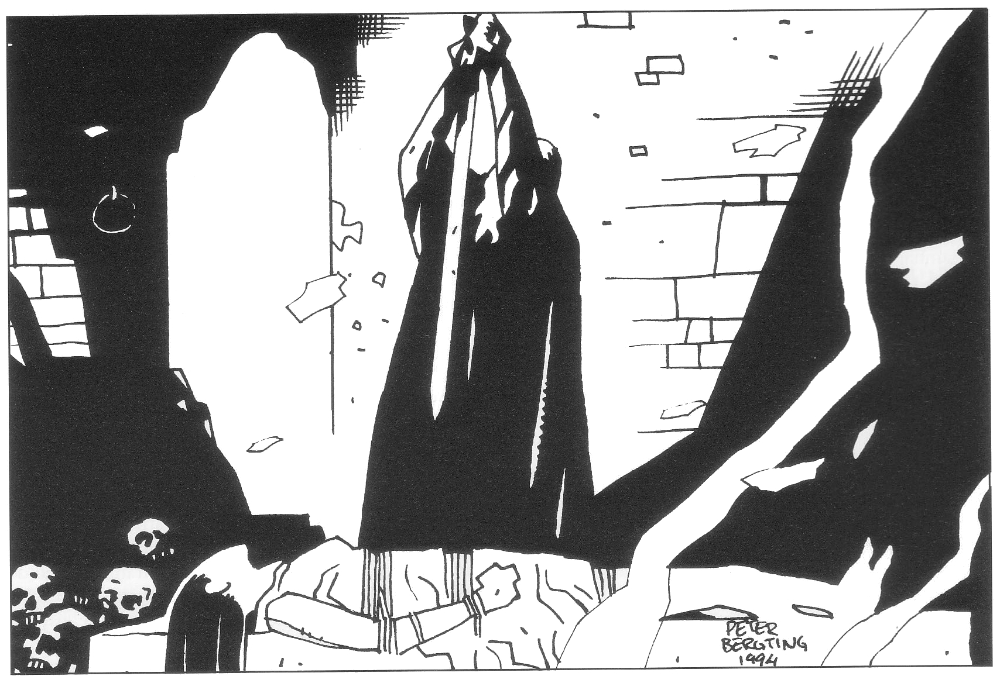
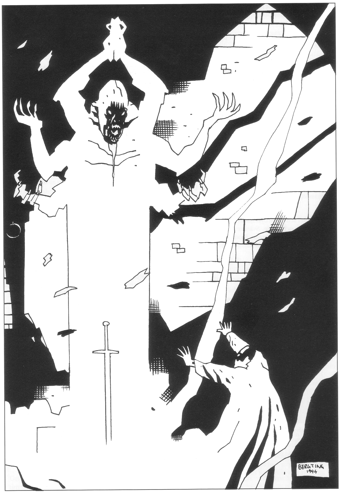

09. Damgambit
Detta parallelläventyr kan till att börja med verka ganska obegripligt för spelarna. Går allt som det ska, betyder det undergång för Ebharing och en Shagulklon. Äventyret kan inledas under eller efter sällskapets jakt på jorddragaren och härjningarna i Krau-Ki för att avslutas under uppgörelsen med kung Ottar och Shagul i Fari-Nhata. Mest praktiskt är att besöka kaklunen på vägen mot Cruri och Fari-Nhata.
I äventyret känner Melealina närvaron av en kaklun på norra Marjura, en märklig varelse vars önskan att smälta samman med nya livsformer hon känner väl till. Efter stor beslutsvånda bestämmer sig Melealina för att pröva en plan, en riskabel bluff för att komma åt demonen Ebharing i Ottars svärd. Detta beslut fattar hon en vecka efter ankomsten till Clusta Noba. Hon skickar äventyrarna med bud till kaklunen i kratern där shagulitersektens järntorn en gång stod. De får med sig ett paket som ska lämnas oöppnat till varelsen. Därefter ska de vänta ett dygn på svar. Med sig far de också ett skott av Bladverk, vilket ska planteras nere i kratern som gåva till kaklunen, en snöripa som brevduva för varelsens svar och en ampull med trolldryck. Trolldrycken bör drickas innan man ger sig ner i kratern för att träffa kaklunen. En oskyddad människa kan nämligen inte se varelsen utan att förlora förståndet.
Kaklunen från Järntornet
Under Bladverks överfart mellan Isakra till Marjura kan man tvingas ta med ett sällskap Remuntradyrkare på pilgrimsfärd. Alla andra undviker dessa dårar för att inte smittas av deras vansinne, men Melealina vet att hon är immun mot faran och samtalar ofta med dem. Hon kan ta med en animist i sällskapet och försäkra vederbörande att Remuntravansinnet kan hållas på avstånd med rätt mental inställning. Hon lär animisten de rätta tankemönstren för att behålla förståndet.
Pilgrimerna tror att deras gud Remuntra uppenbarat sig på Marjura. De påstår att många redan varit där och sedan återvänt för att vittna om ofattbara syner. Så småningom börjar Melealina misstänka att det ligger något bakom deras berättelse. Väl på Clusta Noba blir hon säker på sin sak genom sin förmåga att känna världsfrämmande varelsers närvaro på upp till hundra mils avstånd. Det finns en kaklun i en krater på norra Marjura! Melealina känner till det som står om kakluner i avsnittet personer och varelser. Hon berättar om sina iakttagelser för eventuella animister i sällskapet.
Vad händer om Remuntradyrkarna inte är med?
Remuntradyrkarna kan ha blivit kvar i Isakra eller gått åt under vägen av någon anledning. Melealina kommer ändå att lokalisera kaklunen, men först två veckor efter ankomsten till Clusta Noba. En veckas försening alltså.
Äventyrarnas bud till kaklunen
Efter att ha hållit sig dold någon dag sedan hon lokaliserat kaklunen och bestämt sig hur hon ska göra, kallar Melealina till sig äventyrarna. Alvkvinnan är blek och tärd vilket hon förklarar med grubbel och sömnlöshet. Hon berättar att hon lokaliserat en kaklun i en krater 180 kilometer åt nordväst. Det är denna kaklun remuntradyrkarna misstagit för sin gud. Kakluner, berättar hon, är odödliga, normalt fredliga varelser som är mycket sällsynta i Multiversum. Det är omöjligt att säga hur eller varför just detta exemplar lockats till spelvärlden. Varje kaklun är en unik sammansmältning av kanske hundratals andra varelser och har kvar komponenternas samlade intelligens och egenskaper. Därför är det omöjligt att bedöma styrkan hos just denna individ, men om kaklunen kan förmås att intressera sig för deras sak, kan striden vara så gott som vunnen. Kakluner är emellertid mycket excentriska och deras handlande nästan omöjligt att förutse. Det är under alla omständigheter värt ett försöka att kontakta varelsen. Melealina vill därför skicka äventyrarna med ett fredsbud.
Hon föreslår att de lämnar budet på väg mot Cruri och väntar en dag på svar innan de går vidare. Denna nordliga rutt bör hur som helst vara säkrare än att korsa öns mer tillgängliga, sydligare delar. Ett alternativ är att klä sig som remuntradyrkare och följa pilgrimerna som säkert vet vägen till kaklunen.

En komplikation är att kakluner ser så fruktansvärt groteska ut att de flesta intelligenta varelser tappar förståndet för all framtid vid blotta åsynen. Äventyrarna bör därför inte gå ner i kratern förrän de är redo för mötet. Med sig på uppdraget får sällskapet:
- Ett förseglat, grönt paket av ett vedträs storlek med själva budet. Höljet utgörs av sammanväxta löv från Bladverk och kan inte återförslutas sedan det väl öppnats. Melealina avslöjar helst inte paketets innehåll och vill att det lämnas oöppnat till varelsen.
- Ett skott av skeppet Bladverk vilket ska planteras nere i kratern som gåva åt kaklunen och vattnas med speciella vätskor i läderflaskor.
- En snöripa i bur som de kan skicka tillbaka till Melealina med kaklunens eventuella svar.
- En ampull med tre doser av en särskild drog som förvränger synen på de som ska ner i kratern tillräckligt för att de ska uthärda kaklunens närvaro.
- Varsitt ekollon från blomstereken under förutsättning att eken planterats. Den som äter ett ekollon vid midnatt teleporteras omedelbart tillbaka till blomsterekens matplats (se Oraklets fyra ögon).
För Spelledaren:
Föremålens närmare egenskaper är:
- Paketet innehåller Melealinas avhuggna vänstra ringtå. Se Melealinas plan nedan. För kaklunen spelar det ingen roll om någon har öppnat paketet innan tån överlämnas.
- Skottet vill Melealina i själva verket ha planterat för att snabbt kunna teleportera sig till kratern om kaklunen ger ett positivt besked.
- Snöripan flyger från kratern till Melealina på en dag.
- Drogen gör användaren medvetslös under 1T10+10 timmar och frigör under tiden hans eterkropp. Se vidare ”Mötet med kaklunen”.
- De teleporterande ekollonen utgör en stor fara om de hamnar i orätta händer. Om Shagul eller någon vandöd teleporteras in till blomstereken inne i Store Stenfar dör slottet. Det är möjligt att Melealina inser faran och varnar äventyrarna.
Fas 1: Mötet med kaklunen
Sedan Järntornet sjönk i lavan i Svavelvinter, ligger vulkankraterns botten insvept i dimma från varma källor. Den gamla bron ut mot kraterns centrum står kvar såvida inte äventyrarna puttade omkull den när det begav sig. Shaguls grav står öppen, tom och övergiven. Sikten nere på lavaskorpan varierar från tio till femtio meter. Kaklunen vankar omkring därnere utan att kunna eller vilja ta sig uppför kraterbranten. Från randbergen och bron kan man höra hårresande gurglande och pipande ljud där nere, blandat med hysteriska skratt, pinglanden av bjällror och sånger med nonsenstext. Man kan uppifrån ana rörelser, men inga detaljer.
Den som oförberedd kliver ner på lavaskorpan möter i bästa fall (75% chans per timme) grupper av remuntradyrkare som dansar till gudens ära. Med otur (25% chans per timme) stöter man ihop med kaklunen och råkar ut för dess skadliga verkningar.
Kamalkus
Om det stämmer med tidigare spel, kan rollpersonerna oväntat hitta trollkarlen Kamalkus från Oraklets fyra ögon sittande vid kraterns kant. Trollkarlen är melankolisk till sinnes och tycks samla kraft inför ett avgörande beslut, men blir tacksam för ett mänskligt ansikte i denna ödemark.
Han berättar, ovanligt talför, att det finns en kaklun nere i kratern och att han under lång tid bott med en kaklun, strandsatt i Gombitakles bruna slemdjungler. Som ung reste han mycket i multiversum, men nu känner han sig som en främling överallt. Han samlar nu kraft för att möta den märkliga varelsen utan att veta vad det kommer att leda till. Berättar äventyrarna sitt ärende erbjuder han sig att lämna över budet åt dem. Han vill inte ha någon trolldryck och de behöver inte vänta på honom. Avböjer de nickar han kort och ger sig själv ner i kratern. Äventyrarna ser honom hur som helst aldrig igen.
Trolldrycken
Dricker man av Melealinas medskickade trolldryck faller man omgående i koma som varar 1T4+1 timmar. Andra i sällskapet vet naturligtvis inte vad som händer, men den medvetslöse tycker sig lämna kroppen och flyta upp ett tiotal meter ovanför sin egen livlösa gestalt, fäst vid denna med en tunn silvertråd. Den svävande iakttagaren tycker sig vara en blåaktigt silverglänsande kopia av sig själv, men omvärlden är overklig och suddig. Svävaren uppmärksammar ett blåaktigt ljus från Melealinas paket. I paketet finner han en skimrande tå som han kan lyfta ut och ta med sig utan att paketets hölje bryts (han tar nämligen bara med sig etervarianten av Melealinas tå).
Sällskapet i kratern
Den förtrollade märker att han kan förflytta sig ungefär 20 meter i sekunden med ren tankekraft. Tar han sig ner i kratern är dimman borta och i fjärran syns en grupp ljusskimrande varelser.
Tar sig åskådaren närmare möter han ett märkligt sällskap: ett nittiotal varelser av olika utseende vilka skimrar i olika färger. Deras former varierar och skiftar, några tycks röra sig på två ben medan andra kryper eller slingrar. Skratt och glada sånger stiger från dem och de ropar till sig honom. Varelserna berättar att de är kaklunens sammanvigda, förklarar vad en kaklun är, osv (se personer och varelser). Eventuellt kan äventyrarna känna igen någon av kaklunens komponenter. Äventyraren kan stanna i kaklunens sällskap tills trolldrycken slutar verka men dras då automatiskt tillbaka till sin kropp via silversträngen, ungefär som en fisk på ett spinnspö.
Kaklunens sällskap tar med förtjusning emot Melealinas tå och ber budet hälsa att de gärna vill älska henne.
Melealinas plan
Melealina har en plan som hon helst vill hålla hemlig, dels därför att den kan kräva äventyrarnas omedvetna medverkan, dels därför att den måste bluffa såväl Shagul som Rirba ifall häxan spelar dubbelspel, något Melealina räknar med. Emellertid inviger Melealina eventuella animister i sällskapet mot tysthetslöfte.
Alvkvinnan vet att hon själv är en mycket speciell varelse. Hon misstänker helt riktigt att kaklunen skulle vara passionerat intresserad av att smälta samman med henne. Genom att skicka en smakbit av sig själv i form av sin tå, vill hon få detta bekräftat. När hon förvissat sig om kaklunens intresse, tänker hon använda sin förmåga att kunna teleportera till kända träd för att ta sig till skottet av Bladverk i kratern. Där planerar hon att möta kaklunen för en sammansmältning, vilket är det största osäkerhetsmomentet i planen. Melealina tänker nämligen inte låta sig absorberas passivt utan har för avsikt att dominera kaklunen och tvinga in den i sin egen form istället för tvärtom. Lyckas detta är hon inte längre Melealina utan en kaklun i Melealinas form styrd av Melealinas vilja. Misslyckas det så, tja...
Fas 2: Melealina fångad!
Några dagar efter att sällskapet mött kaklunen kontaktas de av häxan Rirba i vildmarken, via puderdosan eller personligen. Hon berättar bedrövad att Melealina blivit tillfångatagen av Shagul. Uppenbarligen gick alvkvinnan av okänd anledning iland på Marjura med några alvkrigare som eskort där hon togs tillfånga av en patrull vandöda. Nu har hon förts till staden Fari-Nhata i Cruri av trollkarlens flygande horndemon. Shagul planerar att offra henne till svärdet Ebharing vid nästa fullmåne (som bör vara lagom långt borta). Eftersom demonen i svärdet inte kommer från spelvärlden förmår vapnet sannolikt döda alvkvinnan.
Rirba verkar uppriktigt bedrövad. Hon kan fortfarande avslöja den hemliga passagen till Cruri för äventyrarna och hoppas att de förmår döda trollkarlen. Själv är hon inbjuden till offerceremonin, men vet inte om hon vågar träda fram innan Shagul är död, eftersom han nu antagligen känner deras planer liksom hennes eget förräderi. Detta är också sista gången hon vågar använda puderdosan för meddelanden.
Fas 3: Offerceremonin
Denna fas utspelar sig inte förrän sällskapet tagit sig in i Fari-Nhata och eventuellt blivit tillfångatagna. Scenen är Shaguls näste högt över Fari-Nhata. Synska rollpersoner kan få se förvrängda glimtar redan tidigare.

I
Tvåhandssvärdet Ebharing darrar av upphetsning i Shagulklonens händer. Alvkvinnan Melealina, vars liv demonen så hett åtrår sedan besvikelsen i Kristalltjuren, ligger fjättrad på altaret framför honom. Fullmånens vita skiva träder värdigt fram i offerkammarens södra fönster. Det bleka ljuset närmar sig sakta kvinnan på altaret. Nyligen anlända hövdingar från kannibalön Chrachz flinar med snedslipade tänder, ögonen lyser av hänförelse vid åsynen av deras mästare Shagul. I järnbeslag vid kammarens norra vägg sitter alvkvinnans medhjälpare fjättrade som åskådare (under förutsättning att rollpersonerna tagits till fånga), dessa dödliga som så länge gäckat dem alla. Deras lidande ska snart ta sin början, så utdraget som nekromantikens mest subtila kunnande förmår. Alvkvinnan vill demonen däremot njuta i fulla drag, dricka hennes hjärteblod i varma, berusande klunkar. Månen visar sig mitt i fönstret. Tiden är inne! Trollkarlen höjer bladet och stöter det djupt i kvinnans bröst. Metallen råmar vällustigt då den tränger genom hud, ben och pulserande kött.
II.
Ögonblicket senare förbyts ljudet i ett världsfrämmande skri av skräck och vrede. Svärdet Ebharing sitter djupt nerdrivet i Melealinas bröst. Blod tränger fram mellan kvinnans läppar som ändå skiljs i ett leende. Rösten rosslar men hörs tydligt.
”Ja, vår älskade. Vi är Melealina, född i tiden som inte finns. Vi är också kaklunen som finns i Melealinas kött. Nu kräver vi dig! Du har ett val: förena dig med oss som en av många eller lämna oss för alltid.”
En hotfull, halvsynlig fantomgestalt, inte olik en sexarmad korsning mellan en budda, en padda och ett vårtsvin, reser sig med ett rytande ur svärdet, kastar med kroppen som för att lämna vapnet, men förmår inte bryta fri. Den vänder sig istället mot Shagulklonen som fortfarande står med ett krampaktigt grepp om svärdets hjalt.
”Du vämjeliga valp, du fjäskande förförare”, skriar den åt klonen. ”Du har satt mig i denna förnedring genom dina falska drömmar. Jag flyr, men tar dig som leksak till mina pinokamrar vars like du aldrig skådat eller ens drömt om i dina mardrömmar. Där ska järnkrokar beständigt sönderslita ditt kött och syrande maskar fräta din hud i evinnerlig tid.”
Med dessa ord kastar sig skuggan över den vilt fäktande klonen. De kämpar som besatta och bleknar i striden bort för att snart försvinna helt till ett okänt öde. Kannibalhövdingarna rusar skräckslagna ut i den månljusa natten. Kvar finns Melealina, fortfarande vid liv, men bunden vid altaret med svärdet fast nerkört i bröstet, och de kedjade äventyrarna.
Melealinas förklaring och avsked
När Ebharing lämnat svärdet och tagit med sig Shagulklonen vid jordblodkällan får sällskapet ett kort andrum. Som kaklun kan Melealina enkelt befria sig och äventyrarna och sedan förklara hur allt ligger till enligt planen ovan.
Hon avslutar:
... Nej, mina vänner, vi måste lämna er. Vi har låtit oss behålla kvinnans form för att slutföra detta uppdrag och om möjligt locka demonen till oss — han skulle ha blivit en härlig del, men nu kräver vi åter ytan ljus. Inom några dagar skulle ni inte kunna se på oss utan att förlora förståndet. Nu är det er sak att slutföra vårt gemensamma uppdrag. Farväl.
Melealina hälsar till Arn Dunkelbrink att hon älskar honom, men att deras öden inte kunde förenas. Han måste glömma henne och fullborda konfluxen. Äventyrarna ska inte själva söka dominera konfluxen utan hjälpa Arn D, eftersom det större ödet inte är för dem. Inget gott ska komma av otillbörlig ärelystnad. Då allt är sagt går alvkvinnan fram till nästets vägg, stryker över den varvid stenarna blir spegelblanka. Hon träder in genom spegeln och är borta. Den som försöker följa efter finner att spegeln är hård och snart förbleknar igen.
Efterspel
Så snart Ebharing och Shagulklonen oskadliggjorts i Damgambit försöker Rirba smyga iväg för att fylla sin kopparurna med jordblod och släcka källan. Om hon förrått äventyrarna ringer hon först i stormklockan för att varna stadsborna och sinka dem om de förföljer.
Vad händer om planen inte klaffar?
Melealinas bluff med kaklunen är det enda sättet att få bort Ebharing från spelvärlden. Om planen inte går i lås, till exempel för att äventyrarna inte lämnar över tån eller Shagulspelaren väljer att inte offra alvkvinnan, blir svärdet kvar. Melealina har hur som helst spelat ut sin roll. Om hon har smält samman med kaklunen lämnar hon snarast spelvärlden sedan hon berättat för äventyrarna vad som hänt. (Som kaklun har hon tillgång till nya förmågor och kan antagligen meddela sig telepatiskt över hela Marjura.) Annars lämnar hon spelvärlden sedan konfluxen fullbordats oavsett utgång.
